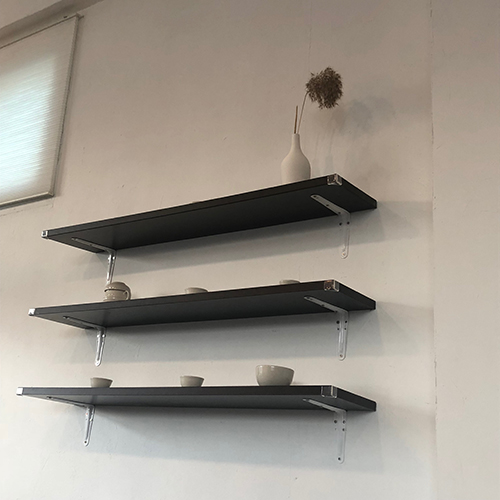
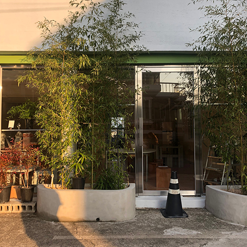

- 여행일기
- 갤러리
- 뜨개질
- 다이어리
- 프로필
- 방명록
우리의 여행이 어떻게 기억에 남을 수 있었는지 생각했다. 만약 우리가 처음 갔던 그 카페가 영업을 하고 있었더라면, 아쉬운 발걸음을 돌리지 않았더라면. 우리는 그 여행을 오래도록 기억할 수 있었을까. 나는 봉포머구리보다, 닭강정보다, 하얗고 깨끗했던 숙소보다 문 닫은 그 카페를 바라보던 순간이 가장 기억에 남는다. 그리고 나는 크게 개의치 않았지만 네가 고른 메뉴 중에 내가 못 먹는 생새우가 있어서 네가 엄청나게 당황해하던 모습도, 그게 그렇게 기억에 남았다.

여행은 원래 원래 얻고자 했던 것과는 다른 것을 얻어 출발점으로 돌아오는 것이라고 한다. 우리는 처음 가고자 했던 카페에 가지 못했고, 그 덕에 조금 더 걸었고, 울며 겨자 먹기로 간 카페에서 네가 좋아하는 크리스마스트리를 보았다. 그 카페가 우연히 시장과 가까웠던가, 그래서 조금 더 걸어서 닭강정을 사러 갔다. 가는 길에 우연히 이쁜 조명을 보고 사진을 찍었다. 그리고 거기서 먹은 모든 메뉴가 성공적이었지만 그 새우, 그거 하나는 먹어보지 못해 잘 모르겠다. 나는 여행을 돌아보면 못내 그 새우가 떠올랐다. 못 먹은 게 아쉽다기보단 그 메뉴를 고른 네가 느꼈을 그 감정을 자꾸만 유추하게 된다. 다른 것보다도 뜻대로 안 된 일들이 그렇게나 기억에 남았다. 그저 그 여행이 배부르고 등 따시기만 했다면 금방 잊혀지지 않았을까 싶기도 하다. 여행을 다녀온 지 3개월이 지나서야 나는 여행을 이런 식으로 다시 기억하게 되었다.

잠시 숨을 돌리기 위해 충동적으로 갔던 여행이었는데 다른 것을 너무 많이 얻어온 기분이 든다. 기회가 된다면 언젠간 그 카페 '루루흐'에 가야만 하고 문우당 서림 건너편인가에 있던 또 다른 서점에 가야 하며, 여름에도 흰다정에는 크리스마스트리가 있는지 확인해야 하고, 그 김에 그때 본 그 조명은 그대로 잘 있는지 확인해야 한다. 다시 속초에 가야 할 이유만 한가득 안고 돌아왔다.